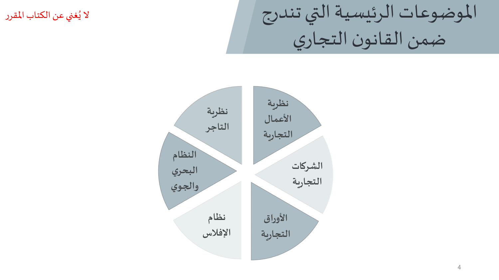
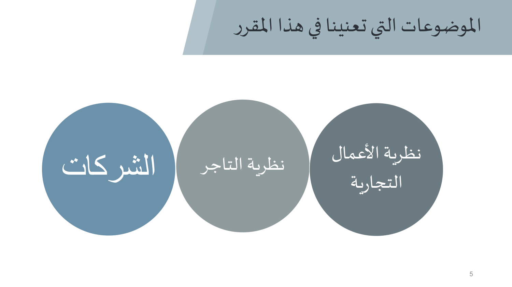
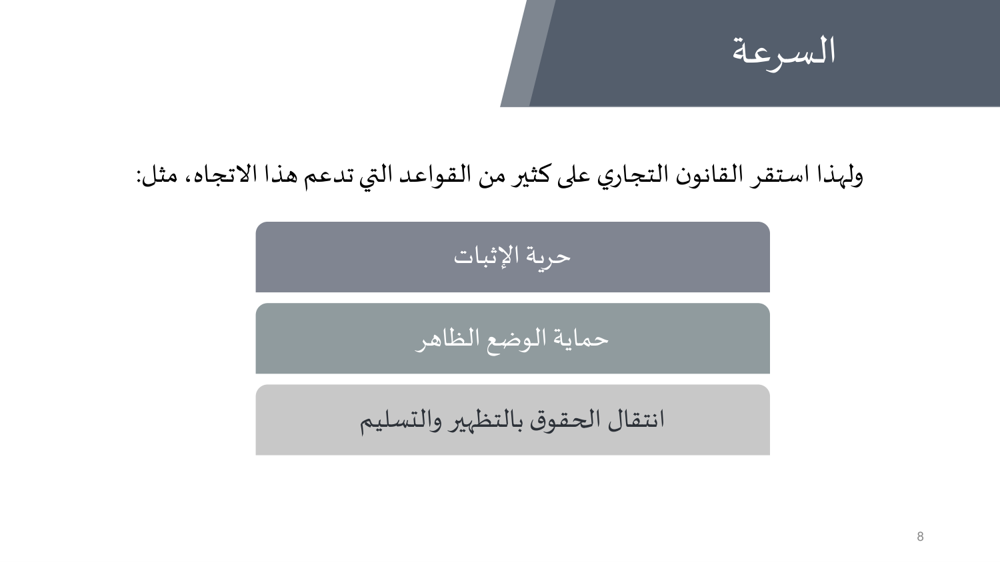
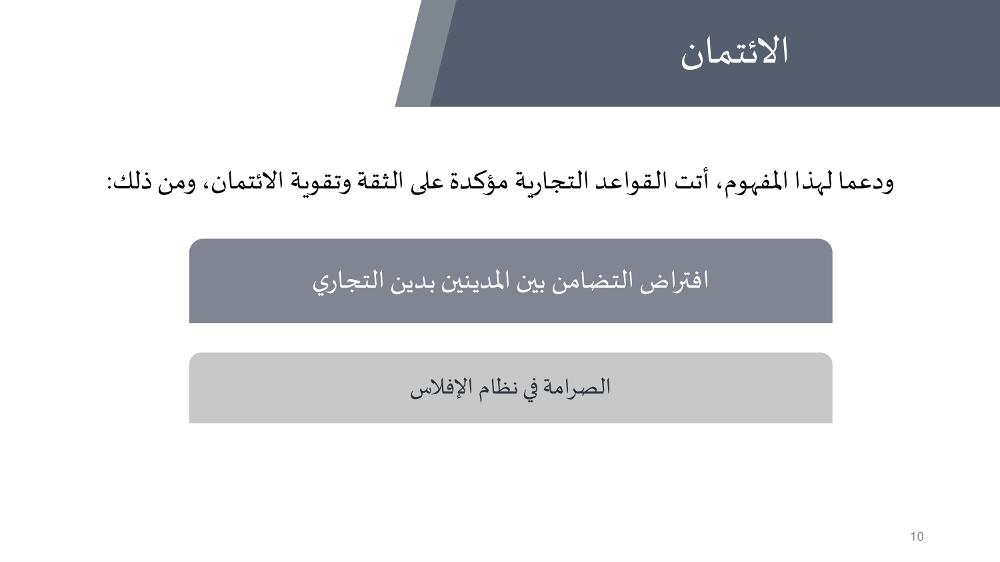
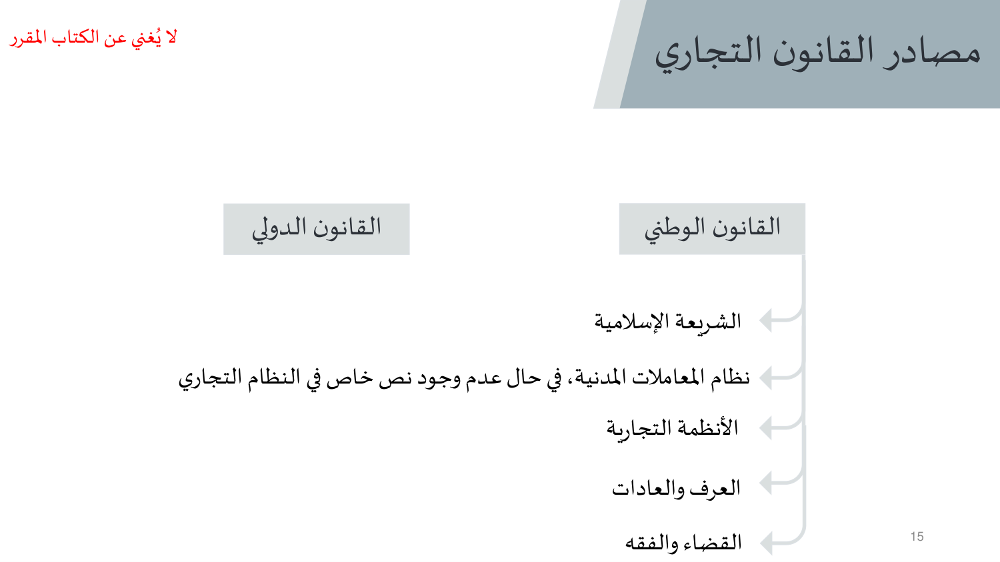
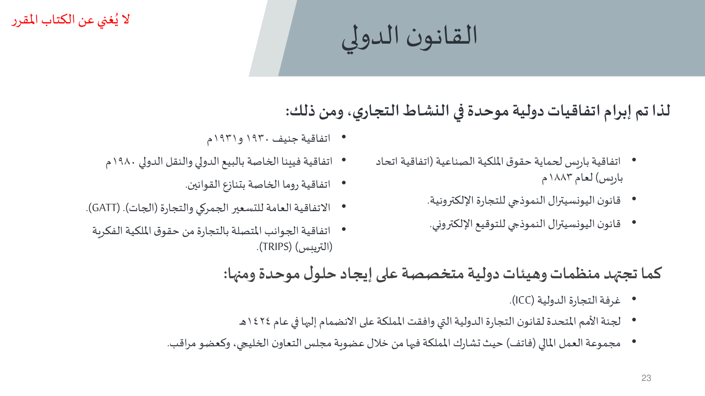

النقاط الأساسية من شرائح الدكتور (23 شريحة). الدكتور قال الاختبار يجي من المحاضرات، فهذي أهم من الكتاب.
أول محاضرة في قانون الأعمال: وش هو القانون التجاري، وخاصيتيه (السرعة والائتمان)، وكيف نحدد نطاقه (النظريتان ومسلك النظام السعودي)، ومن وين يجيب قواعده (المصادر الوطنية والدولية). الشرائح نفسها تنبّه إنها «لا تُغني عن الكتاب المقرر».






22 سؤال على هذي المحاضرة. حلّها في بنك الأسئلة — الجواب يطلع لك على طول، وتقدّمك ينحفظ.